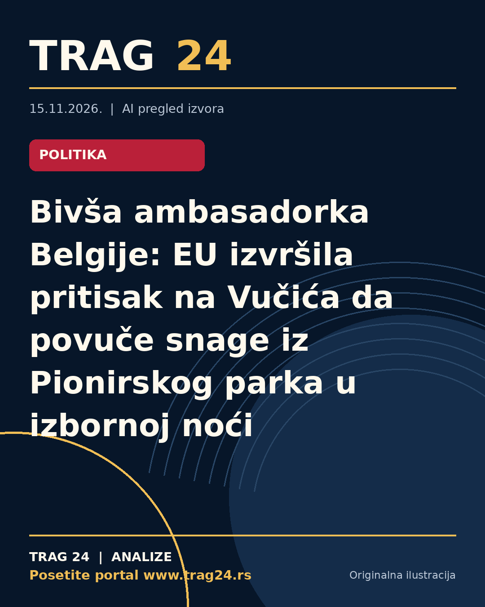

Bivša ambasadorka Belgije: EU izvršila pritisak na Vučića da povuče snage iz Pionirskog parka u izbornoj noći

ŠTA SE DOGODILO
U izbornoj noći 25. oktobra, doskorašnji lider Srbije Aleksandar Vučić povukao je bezbednosne snage raspoređene oko Pionirskog parka, nakon pritiska koji je na njega izvršila Evropska unija. Ovaj potez usledio je kako bi se izbegao mogući građanski rat, budući da je prethodno bilo poznato da su policijske i vojne snage bile raspoređene u velikom broju oko predsedništva i Republičke izborne komisije, što je povećalo tenzije i strah od sukoba.
HRONOLOGIJA
Uoči i tokom izborne noći 25. oktobra, vlast Aleksandra Vučića povećala je prisustvo bezbednosnih snaga u centralnim lokacijama u Beogradu. Navodni pritisak EU na njega da ove snage povuče, odigran je tokom tog vremena. Nakon povlačenja snaga, Studentska lista je formirala novu vladu, što je označilo kraj dosadašnje vlasti Srpske napredne stranke. EU je, prema izjavi bivše ambasadorke Belgije, pažljivo pratila situaciju ne samo na dan izbora, već i u periodu pre pada režima Vučića.
ŠTA NAVODE IZVORI
Izjave bivše ambasadorke Belgije u Beogradu, Denise de Hauer, ukazuju da EU nije bila samo posmatrač, već je aktivno delovala kako bi sprečila eskalaciju sukoba. Ona tvrdi da je EU izvršila pritisak na Vučića da povuče jedinice iz Pionirskog parka, što je sprečilo potencijalni građanski rat. Takođe navodi da EU sada prati situaciju u Srbiji sa velikom pažnjom i spremna je da pomogne u stabilizaciji i reformama. De Hauer ističe značaj očuvanja stabilnosti Srbije za celokupni Zapadni Balkan i ukazuje na kompleksne odnose između Vučića, EU i unutrašnjih političkih procesa u Srbiji.
ŠTA JE POTVRĐENO
Sve tri analize dolaze do zajedničkog zaključka da je bivša ambasadorka Belgije Denise de Hauer izjavila da je Evropska unija izvršila pritisak na Aleksandra Vučića da povuče bezbednosne snage iz Pionirskog parka u noći izbora 25. oktobra. Potvrđeno je da je bilo razmeštanja velikog broja pripadnika bezbednosnih snaga u blizini ključnih lokacija i da je povlačenje tih snaga izvršeno pod pritiskom EU. Takođe je potvrđeno da EU prati stanje u Srbiji i sada, kao i da postoji interes za stabilizaciju političke situacije i podršku reformama.
ŠTA NIJE POTVRĐENO
Nisu izneti detalji o samom opsegu pritiska koji je EU izvršila niti konkretni mehanizmi tog pritiska. Takođe nema potvrde izvora iz Vučićevog okruženja ili zvaničnih predstavnika Evropske unije o ovom događaju. Tvrdnje o potencijalnom građanskom ratu i ulozi Studentske liste u vlasti baziraju se na izjavama bivše ambasadorke, bez dodatnih zvaničnih potvrda. Nije poznato ni kakve je konkretne taktike ili dogovore Vučić sproveo u vezi sa momentom povlačenja snaga.
ŠTA OSTАJE OTVORENO: Ostaje nejasno u kolikoj meri su se druge domaće ili međunarodne aktere uključile u pritiske osim EU i kako su konkretno procesuirani dalji politički koraci. Ostaje otvoreno pitanje o dugoročnim efektima ovog događaja na srpsku unutrašnju politiku i odnos EU-Srbija. Takođe nije poznato na koji način su druge političke grupe, posebno Studentska lista, integrisale ovaj događaj u svoj politički program i kako će se to odraziti na reforme i stabilnost u zemlji.
Izvori
- https://vreme.com/vesti/vucic-pionirski-park-pritisak-eu-belgija/
- https://nova.rs/vesti/politika/vucic-pod-pritiskom-eu-povukao-snage-iz-pionirskog-parka-u-izbornoj-noci/
- https://www.danas.rs/vesti/politika/vucic-eu-pionirski-park/
Ova analiza je pripremljena uz pomoć veštačke inteligencije na osnovu javno dostupnih izvora. Navodi izvora nisu nužno nezavisno potvrđeni.